Arithmetic Sequences
Learning Objectives
- Determine if a sequence is arithmetic (IA 12.2.1)
- Find the general term (nth term) of an arithmetic sequence (IA 12.2.2)
Objective 1: Determine if a sequence is arithmetic (IA 12.2.1)
An arithmetic sequence is a sequence where the difference between consecutive terms is always the same.
The difference between consecutive terms, d, and is called the common difference, for n greater than or equal to two.
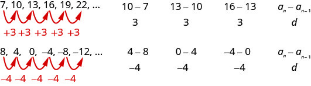
Determine if each sequence is arithmetic. If so, indicate the common difference.
ⓐ
ⓑ
Solution
To determine if the sequence is arithmetic, we find the difference of the consecutive terms shown.
ⓐ
ⓑ
Practice Makes Perfect
Determine if each sequence is arithmetic. If so, indicate the common difference.
-4, 4, 2, 10, 8, 16, …
| Find the difference of consecutive terms. | |
-3, -1, 1, 3, 5, 7, …
| Find the difference of consecutive terms. | |
Write the first five terms of the sequence where the first term is 5 and the common difference is
Solution
We start with the first term and add the common difference. Then we add the common difference to that result to get the next term, and so on.
The sequence is
Practice Makes Perfect
Write the first five terms of the sequence where the first term is –4 and the common difference is
The sequence is: ________________________________________
Objective 2: Find the general term (nth term) of an arithmetic sequence (IA 12.2.2)
In the last section, we found a formula for the general term of a sequence, we can also find a formula for the general term of an arithmetic sequence.
Let’s write the first few terms of a sequence where the first term is and the common difference is d. We will then look for a pattern.
As we look for a pattern we see that each term starts with .
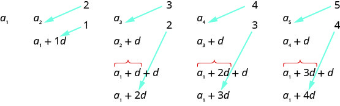
The first term adds 0d to the , the second term adds 1d, the third term adds 2d, the fourth term adds 3d, and the fifth term adds 4d. The number of ds that were added to is one less than the number of the term. We then have the formula for the general term of an arithmetic sequence.
Find the general term (nth term) of an arithmetic sequence.
- ⓐ
Find the twenty-first term of a sequence where the first term is three and the common difference is eight.
- ⓑ
Find the eleventh term of a sequence where the third term is 19 and the common difference is five. Give the formula for the general term.
Solution
| ⓐ To find the 21st term, use the formula with , , and | |
| Substitute | |
| Simplify |
| ⓑ
Let's first find . Use the formula with , , and . Substitute these values and simplify |
|
| To find the 11th term, use the formula with , , and Substitute these values and simplify |
|
| To find the general term, substitute and into the formula. |
Practice Makes Perfect
Find the general term (nth term) of an arithmetic sequence.
Find the sixteenth term of a sequence where the first term is 11 and the common difference is −6.
Find the 19th term of a sequence where the 5th term is 1 and the common difference is -4. Give the formula for the general term.
Companies often make large purchases, such as computers and vehicles, for business use. The book-value of these supplies decreases each year for tax purposes. This decrease in value is called depreciation. One method of calculating depreciation is straight-line depreciation, in which the value of the asset decreases by the same amount each year.
As an example, consider a woman who starts a small contracting business. She purchases a new truck for $25,000. After five years, she estimates that she will be able to sell the truck for $8,000. The loss in value of the truck will therefore be $17,000, which is $3,400 per year for five years. The truck will be worth $21,600 after the first year; $18,200 after two years; $14,800 after three years; $11,400 after four years; and $8,000 at the end of five years. In this section, we will consider specific kinds of sequences that will allow us to calculate depreciation, such as the truck’s value.
Finding Common Differences
The values of the truck in the example are said to form an arithmetic sequence because they change by a constant amount each year. Each term increases or decreases by the same constant value called the common difference of the sequence. For this sequence, the common difference is –3,400.
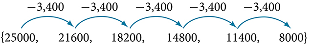
The sequence below is another example of an arithmetic sequence. In this case, the constant difference is 3. You can choose any term of the sequence, and add 3 to find the subsequent term.
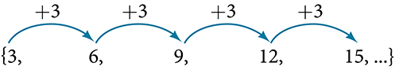
Finding Common Differences
Is each sequence arithmetic? If so, find the common difference.
- ⓐ
- ⓑ
Solution
Subtract each term from the subsequent term to determine whether a common difference exists.
- ⓐThe sequence is not arithmetic because there is no common difference.
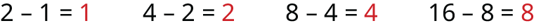
- ⓑThe sequence is arithmetic because there is a common difference. The common difference is 4.
Writing Terms of Arithmetic Sequences
Now that we can recognize an arithmetic sequence, we will find the terms if we are given the first term and the common difference. The terms can be found by beginning with the first term and adding the common difference repeatedly. In addition, any term can also be found by plugging in the values of and into formula below.
Writing Terms of Arithmetic Sequences
Write the first five terms of the arithmetic sequence with and .
Solution
Adding is the same as subtracting 3. Beginning with the first term, subtract 3 from each term to find the next term.
The first five terms are
Analysis
As expected, the graph of the sequence consists of points on a line as shown in Figure 2.
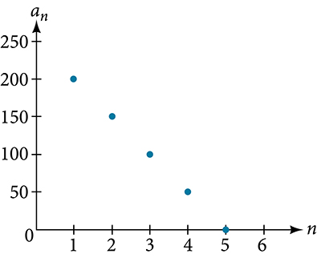
Writing Terms of Arithmetic Sequences
Given and , find .
Solution
The sequence can be written in terms of the initial term 8 and the common difference .
We know the fourth term equals 14; we know the fourth term has the form .
We can find the common difference .
Find the fifth term by adding the common difference to the fourth term.
Analysis
Notice that the common difference is added to the first term once to find the second term, twice to find the third term, three times to find the fourth term, and so on. The tenth term could be found by adding the common difference to the first term nine times or by using the equation
Using Recursive Formulas for Arithmetic Sequences
Some arithmetic sequences are defined in terms of the previous term using a recursive formula. The formula provides an algebraic rule for determining the terms of the sequence. A recursive formula allows us to find any term of an arithmetic sequence using a function of the preceding term. Each term is the sum of the previous term and the common difference. For example, if the common difference is 5, then each term is the previous term plus 5. As with any recursive formula, the first term must be given.
Writing a Recursive Formula for an Arithmetic Sequence
Write a recursive formula for the arithmetic sequence.
Solution
The first term is given as . The common difference can be found by subtracting the first term from the second term.
Substitute the initial term and the common difference into the recursive formula for arithmetic sequences.
Analysis
We see that the common difference is the slope of the line formed when we graph the terms of the sequence, as shown in Figure 3. The growth pattern of the sequence shows the constant difference of 11 units.
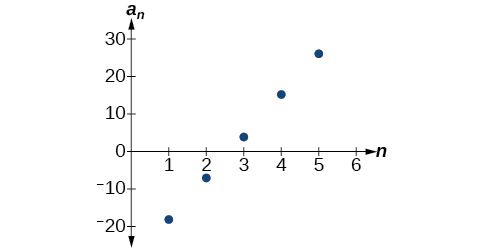
Using Explicit Formulas for Arithmetic Sequences
We can think of an arithmetic sequence as a function on the domain of the natural numbers; it is a linear function because it has a constant rate of change. The common difference is the constant rate of change, or the slope of the function. We can construct the linear function if we know the slope and the vertical intercept.
To find the y-intercept of the function, we can subtract the common difference from the first term of the sequence. Consider the following sequence.
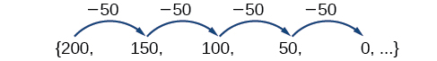
The common difference is , so the sequence represents a linear function with a slope of . To find the -intercept, we subtract from . You can also find the -intercept by graphing the function and determining where a line that connects the points would intersect the vertical axis. The graph is shown in Figure 4.
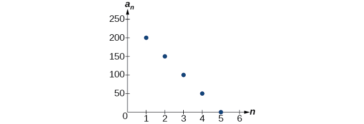
Recall the slope-intercept form of a line is When dealing with sequences, we use in place of and in place of If we know the slope and vertical intercept of the function, we can substitute them for and in the slope-intercept form of a line. Substituting for the slope and for the vertical intercept, we get the following equation:
We do not need to find the vertical intercept to write an explicit formula for an arithmetic sequence. Another explicit formula for this sequence is , which simplifies to
Writing the nth Term Explicit Formula for an Arithmetic Sequence
Write an explicit formula for the arithmetic sequence.
Solution
The common difference can be found by subtracting the first term from the second term.
The common difference is 10. Substitute the common difference and the first term of the sequence into the formula and simplify.
Analysis
The graph of this sequence, represented in Figure 5, shows a slope of 10 and a vertical intercept of .
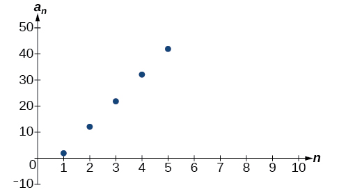
Finding the Number of Terms in a Finite Arithmetic Sequence
Explicit formulas can be used to determine the number of terms in a finite arithmetic sequence. We need to find the common difference, and then determine how many times the common difference must be added to the first term to obtain the final term of the sequence.
Finding the Number of Terms in a Finite Arithmetic Sequence
Find the number of terms in the finite arithmetic sequence.
Solution
The common difference can be found by subtracting the first term from the second term.
The common difference is . Substitute the common difference and the initial term of the sequence into the term formula and simplify.
Substitute for and solve for
There are eight terms in the sequence.
Solving Application Problems with Arithmetic Sequences
In many application problems, it often makes sense to use an initial term of instead of In these problems, we alter the explicit formula slightly to account for the difference in initial terms. We use the following formula:
Solving Application Problems with Arithmetic Sequences
A five-year old child receives an allowance of $1 each week. His parents promise him an annual increase of $2 per week.
- ⓐWrite a formula for the child’s weekly allowance in a given year.
- ⓑWhat will the child’s allowance be when he is 16 years old?
Solution
- ⓐ
The situation can be modeled by an arithmetic sequence with an initial term of 1 and a common difference of 2.
Let be the amount of the allowance and be the number of years after age 5. Using the altered explicit formula for an arithmetic sequence we get:
- ⓑ
We can find the number of years since age 5 by subtracting.
We are looking for the child’s allowance after 11 years. Substitute 11 into the formula to find the child’s allowance at age 16.
The child’s allowance at age 16 will be $23 per week.
Key Equations
| recursive formula for nth term of an arithmetic sequence | |
| explicit formula for nth term of an arithmetic sequence |
Key Concepts
- An arithmetic sequence is a sequence where the difference between any two consecutive terms is a constant.
- The constant between two consecutive terms is called the common difference.
- The common difference is the number added to any one term of an arithmetic sequence that generates the subsequent term. See Example 4.
- The terms of an arithmetic sequence can be found by beginning with the initial term and adding the common difference repeatedly. See Example 5 and Example 6.
- A recursive formula for an arithmetic sequence with common difference is given by See Example 7.
- As with any recursive formula, the initial term of the sequence must be given.
- An explicit formula for an arithmetic sequence with common difference is given by See Example 8.
- An explicit formula can be used to find the number of terms in a sequence. See Example 9.
- In application problems, we sometimes alter the explicit formula slightly to See Example 10.
Section Exercises
Verbal
What is an arithmetic sequence?
Solution
A sequence where each successive term of the sequence increases (or decreases) by a constant value.
How is the common difference of an arithmetic sequence found?
How do we determine whether a sequence is arithmetic?
Solution
We find whether the difference between all consecutive terms is the same. This is the same as saying that the sequence has a common difference.
What are the main differences between using a recursive formula and using an explicit formula to describe an arithmetic sequence?
Describe how linear functions and arithmetic sequences are similar. How are they different?
Solution
Both arithmetic sequences and linear functions have a constant rate of change. They are different because their domains are not the same; linear functions are defined for all real numbers, and arithmetic sequences are defined for natural numbers or a subset of the natural numbers.
Algebraic
For the following exercises, find the common difference for the arithmetic sequence provided.
Solution
The common difference is
For the following exercises, determine whether the sequence is arithmetic. If so find the common difference.
Solution
The sequence is not arithmetic because
For the following exercises, write the first five terms of the arithmetic sequence given the first term and common difference.
,
,
Solution
For the following exercises, write the first five terms of the arithmetic series given two terms.
Solution
For the following exercises, find the specified term for the arithmetic sequence given the first term and common difference.
First term is 3, common difference is 4, find the 5th term.
First term is 4, common difference is 5, find the 4th term.
Solution
First term is 5, common difference is 6, find the 8th term.
First term is 6, common difference is 7, find the 6th term.
Solution
First term is 7, common difference is 8, find the 7th term.
For the following exercises, find the first term given two terms from an arithmetic sequence.
Find the first term or of an arithmetic sequence if and
Solution
Find the first term or of an arithmetic sequence if and
Find the first term or of an arithmetic sequence if and
Solution
Find the first term or of an arithmetic sequence if and
Find the first term or of an arithmetic sequence if and
Solution
For the following exercises, find the specified term given two terms from an arithmetic sequence.
and Find
and Find
Solution
For the following exercises, use the recursive formula to write the first five terms of the arithmetic sequence.
Solution
For the following exercises, write a recursive formula for each arithmetic sequence.
Solution
Solution
Solution
Solution
Solution
For the following exercises, write a recursive formula for the given arithmetic sequence, and then find the specified term.
Find the 17th term.
Find the 14th term.
Solution
Find the 12th term.
For the following exercises, use the explicit formula to write the first five terms of the arithmetic sequence.
Solution
First five terms:
For the following exercises, write an explicit formula for each arithmetic sequence.
Solution
Solution
Solution
Solution
Solution
For the following exercises, find the number of terms in the given finite arithmetic sequence.
Solution
There are 10 terms in the sequence.
Solution
There are 6 terms in the sequence.
Graphical
For the following exercises, determine whether the graph shown represents an arithmetic sequence.
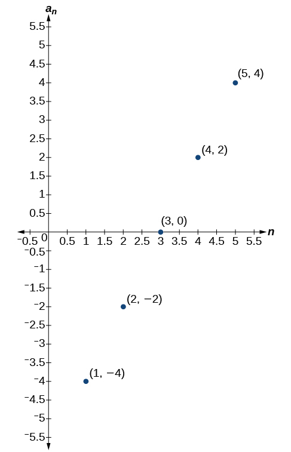
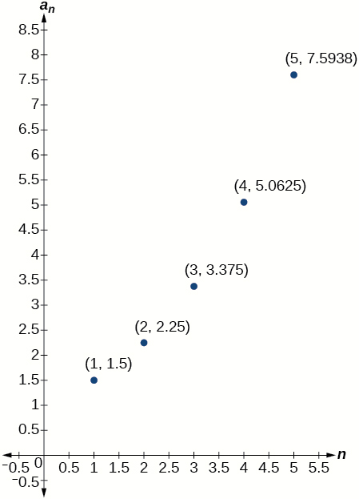
Solution
The graph does not represent an arithmetic sequence.
For the following exercises, use the information provided to graph the first 5 terms of the arithmetic sequence.
Solution
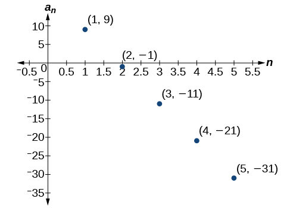
Technology
For the following exercises, follow the steps to work with the arithmetic sequence using a graphing calculator:
- Press [MODE]
- Select SEQ in the fourth line
- Select DOT in the fifth line
- Press [ENTER]
- Press [Y=]
- is the first counting number for the sequence. Set
- is the pattern for the sequence. Set
- is the first number in the sequence. Set
- Press [2ND] then [WINDOW] to go to TBLSET
- Set
- Set
- Set Indpnt: Auto and Depend: Auto
- Press [2ND] then [GRAPH] to go to the TABLE
What are the first seven terms shown in the column with the heading
Solution
Use the scroll-down arrow to scroll to What value is given for
Press [WINDOW]. Set , , , , , and Then press [GRAPH]. Graph the sequence as it appears on the graphing calculator.
Solution
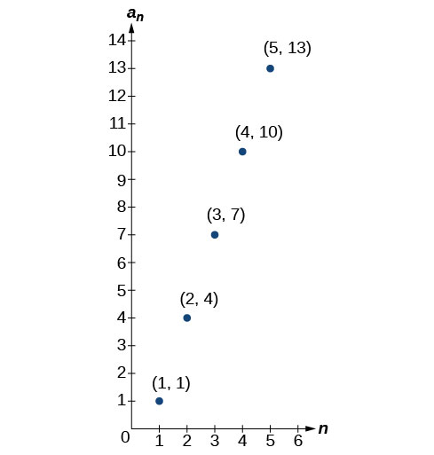
For the following exercises, follow the steps given above to work with the arithmetic sequence using a graphing calculator.
What are the first seven terms shown in the column with the heading in the TABLE feature?
Graph the sequence as it appears on the graphing calculator. Be sure to adjust the WINDOW settings as needed.
Solution
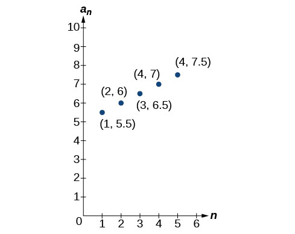
Extensions
Give two examples of arithmetic sequences whose 4th terms are
Give two examples of arithmetic sequences whose 10th terms are
Solution
Answers will vary. Examples: and
Find the 5th term of the arithmetic sequence
Find the 11th term of the arithmetic sequence
Solution
At which term does the sequence exceed 151?
At which term does the sequence begin to have negative values?
Solution
The sequence begins to have negative values at the 13th term,
For which terms does the finite arithmetic sequence have integer values?
Write an arithmetic sequence using a recursive formula. Show the first 4 terms, and then find the 31st term.
Solution
Answers will vary. Check to see that the sequence is arithmetic. Example: Recursive formula: First 4 terms:
Write an arithmetic sequence using an explicit formula. Show the first 4 terms, and then find the 28th term.
Analysis
The graph of each of these sequences is shown in Figure 1. We can see from the graphs that, although both sequences show growth, is not linear whereas is linear. Arithmetic sequences have a constant rate of change so their graphs will always be points on a line.
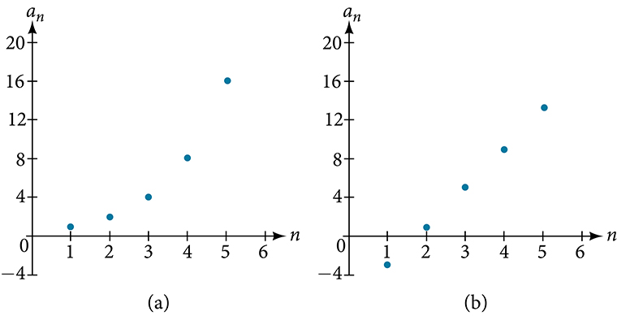